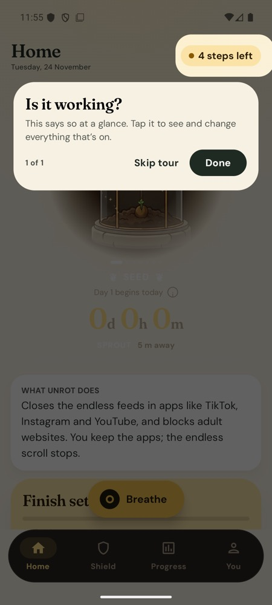
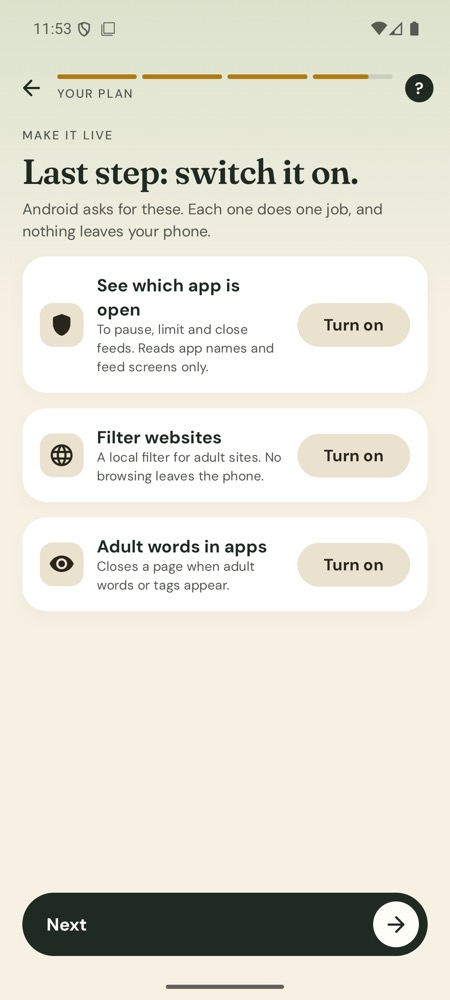

A UI and UX pass on the Android app
I went through the current build on an emulator: a fresh install, all 31 onboarding screens, then Home. Below: what gets in the way, then the fixes as screens. Everything stays in the Glasshouse look you approved, and every feature keeps its place. Nothing is built yet; this page is for your yes or no.
Eight things that get in the way
Breathe button covers the setup card
The floating Breathe pill sits over "Finish set…", so the card a new user most needs is cut off.
Day one opens on "0d 0h 0m"
Three big zeros are the first thing you see after a 4-minute setup. It reads as "nothing yet" instead of "it has started".
You can finish setup with nothing switched on
"Last step: switch it on" has a plain Next. I tapped it, got "Almost set", and landed on Home with 4 steps left and no feed closed.
Setup is asked for in two places
A "4 steps left" chip at the top and a "Finish setup" card lower down. Neither says which step comes next.
31 screens before Home
Five screens explain why feeds are hard, and two separate screens say how Unrot helps (17 and 21). The permissions, which are what makes it work, come at screen 29.
The tour hides what it points at
"Is it working?" covers the glass and the status chip it is describing, and Home's own "What Unrot does" card repeats onboarding.
Usage access opens a list of every app
Android shows "App usage data" with Digital Wellbeing, Google, Hisn and others. You have to find Unrot yourself, and the app doesn't notice when you come back.
Faint stage labels
"SEED" and "SPROUT · 5 m away" are pale gold on cream, below readable contrast. The launch splash is still the old blue sprout.
Setup lives in one card, and the glass says it has started
The setup card goes at the top with a progress bar and the next step's own button. The zeros become a promise with a time on it. The header chip shows protection status only.
Now

Proposed

Once set up, Home is the glass, today, and one thought
Day 3 with everything on. The Shield panes appear as a small strip so "is it working" is answered without opening another tab. An open pane shows up amber right here.

All five panes closed.
One pane open: it says which one, why, and has one Fix button. This replaces the long "Protection needs attention" card with its five rows of Stopped/Running.
One switch at a time, and the app sees it work
The step that makes Unrot work gets the most care. Each switch shows where to tap in Android, and the screen ticks itself when you come back. Skipping is still allowed, but it says plainly what won't work.
Now

Proposed
Four switches, then you're done.
From 31 screens to 18, with the switches before the pledge
Your four chapters and all the sourced facts stay. What changes: the two "how it helps" screens become one, the five "why it's hard" screens become three, and switching on moves ahead of the pledge, so the pledge comes once it's real.
You
Why it's hard
What helps
Your plan
Smaller fixes
| What | Change | Where |
|---|---|---|
| Contrast | Stage name and "next stage" line at full gold or ink. Every label on the cream theme reaches 4.5:1. | UnrotGlassHero.kt, Theme.kt |
| Splash | Launch splash uses the glass and gold on near-black, not the old blue sprout, so opening the app goes splash → glass with no colour jump. | general res/ splash theme |
| Usage access | Open with package: data on Android 10+ so it lands on Unrot's own page, then re-check on resume. | WelcomeActivity.kt, Usage.kt |
| Single-choice questions | "When does scrolling get you most?" is the only question with no Skip. Give it one like the others. | UnrotOnboarding.kt |
| Tour | One step, anchored under the chip, never over the glass. Shown once, and it remembers. | tour targets in ProtectionScreen.kt |
| Dock | Breathe moves into the tab bar. Content gets bottom padding equal to the dock height, so the last card is never hidden. | NativeShell.kt, UnrotPauseFab |
Build order
1 · Breathe into the dock and the overlap fix · 2 · Home day one with the setup card · 3 · Switch it on, one at a time · 4 · Home's glass strip and one-pane-open card · 5 · Onboarding down to 18 · 6 · Small fixes. Each step gets compiled for both editions, core tests, and a look on the emulator. The Islamic edition stays as it is.